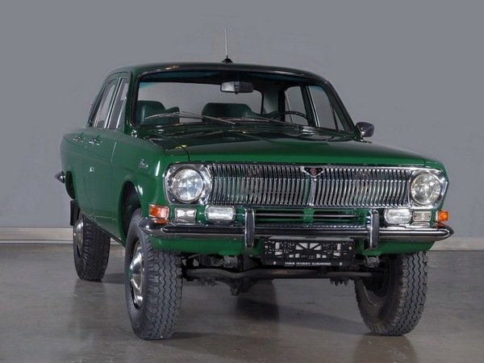

ГАЗ-24 «Во́лга» — советский автомобиль среднего класса, серийно производившийся на Горьковском автомобильном заводе с 1967 по 1986 год. Представляет собой пятое поколение легковых автомобилей ГАЗ, является преемником модели ГАЗ-21 «Волга».
Год выпуска 1959-1978 гг.
Название ГАЗ-24 «Волга»
Год выпуска 1970-1978 гг
Кузов Несущий цельнометаллический седан
Вместительность 4 пассажира, водитель, 50 кг багажа
Двигатель Карбюраторный, 4-цилиндровый 24-Д
Объем двигателя 2445 см.3
Диаметр цилиндра 92 см
Степень сжатия 8,2
Макс. мощность 69,9 кВт / 95 л.с.
Вид топлива Аи-93
Средний расход топлива 10-13 л/100 км
Максимальная скорость 145 км/ч
Время разгона до 100 км/ч 19 сек
Сцепление Сухое, однодисковое с гидравлическим приводом
Коробка передач Механическая, 4-ступенчатая, оснащена синхронизаторами
Подвеска, передняя/задняя Независимая/рессорная
Амортизаторы Телескопические, гидравлические с 2-сторонним действием
Карбюратор 2-камерный с падающим потоком
Рулевой механизм Глобоидный с 3-гребневым роликом и передаточным числом 19,1
Рулевой вал Оснащен травмобезопасной муфтой и противоугонным устройством (блокиратором)
Тормозная система Барабанного типа с гидравлическим приводом и индикатором об отказе одного из контуров
ГАЗ-24-01 – такси с маркированным кузовом седан, дефорсированным двигателем ЗМЗ-24-01, таксометром, зеленым фонарем (свободен)
ГАЗ-24-02 – пятидверный универсал серийного производства

ГАЗ-24-03 – санитарный автомобиль
ГАЗ-24-04 – такси с кузовом седан
ГАЗ-24-24 – лимитированный автомобиль для спецслужб с улучшенным двигателем, большей скоростью движения (до 170 км/час) и усиленным кузовом. В народе назывался «догонялка»
ГАЗ-24-54 – экспортный праворульный (неправильный) седан
ГАЗ-24-95 — лимитированная серия с полным приводом и отсутствием рамы. Всего выпущено 4 экземпляра, одна из которых досталась Брежневу, а остальные – высокопоставленным военным.
